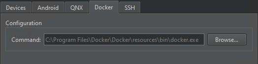
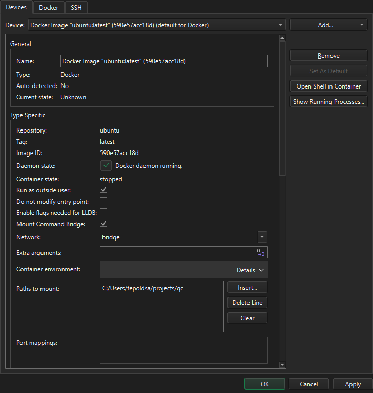
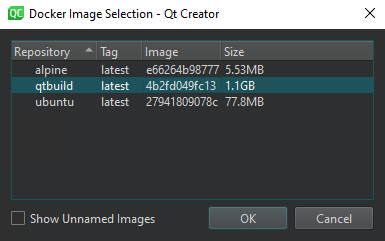

Add Docker devices
Create Docker devices from Docker images and use them to build, run, and debug applications. A Docker container operates like a virtual machine but uses less system resources at the cost of being less flexible.
While Linux, macOS, and Windows hosts are supported in principle, Linux is the recommended platform.
To build, run, and debug applications on Docker devices, install and configure docker-cli on the development host. Qt Creator automatically detects build and run kit items, such debuggers and Qt versions, in the Docker container and creates kits for the devices.
You are advised to use CMake to build applications in the Docker container.
Note: Enable the Docker plugin to use it.
To pull images from Docker hub or other registries, use the docker pull command.
Add Docker images as devices
To add a Docker image as a device:
- Go to Preferences > Devices > Docker.
- In Command, enter the path to the Docker CLI.

- Go to Devices.
- Select Add > Docker Device > Start Wizard to search for images in your local Docker installation.
- Select a Docker image, and then select OK.
- In Devices, check and change Docker device preferences.

- Select Apply to save your changes.
Select Docker images
The Docker Image Selection dialog displays a list of Docker images in your local Docker installation. You can sort the images according to the repository name or tag or the image ID or size.

Select Show unnamed images to show images that are not tagged.
Double-click an image to select it.
Edit Docker device kits
Go to Preferences > Kits to check that the automatically generated kits point to the appropriate kit items.
See also Enable and disable plugins, How To: Develop for Docker, and How To: Manage Kits.